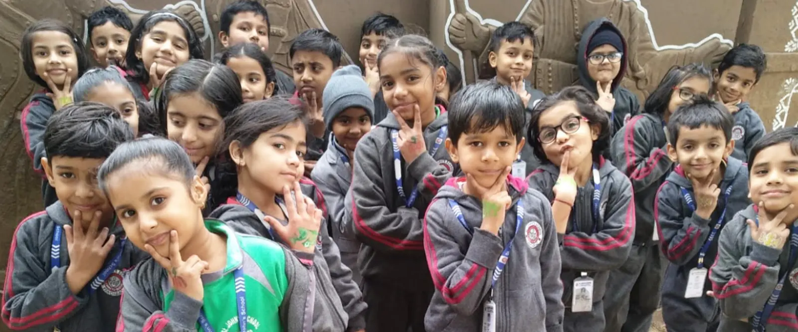

Nursery to Class XII
One CBSE school, five stages. What your child learns at each stage, how we teach it, and how progress is measured.

The five stages
Subjects follow the CBSE scheme of studies for each class. The lists below are indicative; the school will publish its exact subject offer every year.
Pre-primary: Nursery, LKG and UKG
Children learn through play, stories, rhymes, music and movement. We build early language in English and Hindi, number sense, fine motor skills and the confidence to be away from home. No homework, no exams.
Primary: Classes I to V
Strong reading, writing and arithmetic, with plenty of activity. Every week includes art, music, dance and games, and a library period to build the reading habit.
Middle: Classes VI to VIII
Subjects separate out and lab work begins. Projects and presentations train children to find things out for themselves and explain what they found.
Secondary: Classes IX and X
The CBSE secondary course, ending in the Class X board exam. Regular periodic tests, internal assessment and pre-board exams, with remedial help for anyone who falls behind.
Senior secondary: Classes XI and XII
Students choose a stream after Class X and sit the CBSE Class XII board exam. See senior secondary below for how admission to Class XI works.
How we teach
Activity first
In the early years, children learn by doing: counting real things, acting out stories, singing and moving. It follows the foundational stage of the National Education Policy 2020.
Read every day
Library periods, reading aloud and class libraries in every stage. Children who read widely do better in every subject, not just English.
Learn to serve
Values are taught by practising them: house duties, helping juniors, service projects and celebrating every festival as one school.
Exams and assessment
We assess to help children improve, not just to rank them. Parents see every mark in the parent app the day it is published.
| Stage | How progress is measured | Reports |
|---|---|---|
| Pre-primary | Observation, activity records and portfolios of each child's work. No written exams. | Descriptive report, twice a year |
| Classes I to V | Class work, oral and written periodic assessments, half-yearly and annual assessment. | Report card each term |
| Classes VI to VIII | Periodic tests, projects and lab work, half-yearly and annual exams. | Report card each term |
| Classes IX and X | CBSE scheme: periodic tests, internal assessment, pre-boards, and the Class X board exam. | Term reports and CBSE results |
| Classes XI and XII | Unit tests, half-yearly and pre-board exams, practicals and projects, and the Class XII board exam. | Term reports and CBSE results |
CBSE requires at least 75% attendance to appear in the board exams.
Senior secondary
Admission to Class XI is offered on the basis of the Class IX result and confirmed once the Class X result is out.
- Provisional admission to Class XI is based on the Class IX result.
- It becomes regular once the CBSE Class X result, pass certificate and mark sheet are submitted.
- If a student does not pass Class X, the provisional admission is cancelled automatically.
- Students from other schools submit their original Transfer Certificate.
- Streams and subject combinations for 2027–28: Medical, Non-Medical, Commerce and Humanities. See the subjects.
Toppers and achievements
What the classroom leads to: board results, medals and prizes, and former students in the civil services, CA, JEE and CLAT.
- 34Class XII students at 90% and above, 2026
- 67Class X students at 90% and above, 2026
- 99%Top score in Class X, Devaanshi Modi
- AIR 36Civil services rank of former student Deepesh Kedia